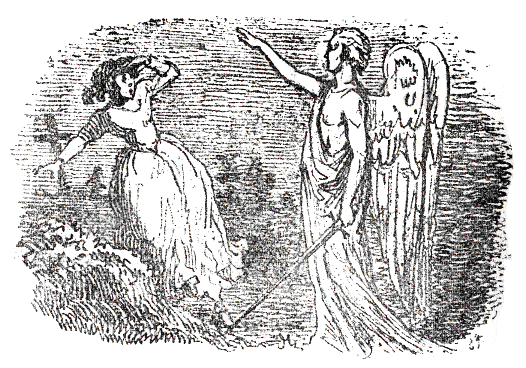
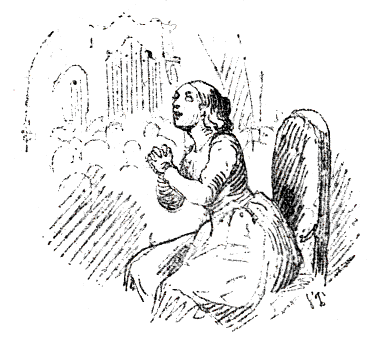

| 赤いくつ | |
| アンデルセンハンス・クリスチャン | |
| (2012) | |
赤いくつ
ハンス・クリスティアン・アンデルセン
楠山正雄訳

あるところに、ちいさい女の子がいました。その子はとてもきれいなかわいらしい子でしたけれども、貧乏だったので、夏のうちははだしであるかなければならず、冬はあつぼったい木のくつをはきました。ですから、その女の子のかわいらしい足の甲
は、すっかり赤くなって、いかにもいじらしく見えました。
村のなかほどに、年よりのくつ屋のおかみさんが住んでいました。そのおかみさんはせっせと赤いらしゃの古切れをぬって、ちいさなくつを、一足こしらえてくれていました。このくつはずいぶんかっこうのわるいものでしたが、心のこもった品で、その女の子にやることになっていました。その女の子の名はカレンといいました。
カレンは、おっかさんのお葬式
の日に、そのくつをもらって、はじめてそれをはいてみました。赤いくつは、たしかにおとむらいにはふさわしくないものでしたが、ほかに、くつといってなかったので、素足
の上にそれをはいて、粗末な棺
おけのうしろからついていきました。
そのとき、年とったかっぷくのいいお年よりの奥
さまをのせた、古風な大馬車が、そこを通りかかりました。この奥さまは、むすめの様子をみると、かわいそうになって、
「よくめんどうをみてやりとうございます。どうか、この子を下さいませんか。」と、坊
さんにこういってみました。
こんなことになったのも、赤いくつのおかげだと、カレンはおもいました。ところが、その奥さまは、これはひどいくつだといって、焼きすてさせてしまいました。そのかわりカレンは、小ざっぱりと、見ぐるしくない着物を着せられて、本を読んだり、物を縫
ったりすることを教えられました。人びとは、カレンのことを、かわいらしい女の子だといいました。カレンの鏡は、
「あなたはかわいらしいどころではありません。ほんとうにお美しくっていらっしゃいます。」と、いいました。
あるとき女王さまが、王女さまをつれてこの国をご旅行になりました。人びとは、お城のほうへむれを作ってあつまりました。そのなかに、カレンもまじっていました。王女さまは美しい白い着物を着て、窓のところにあらわれて、みんなにご自分の姿が見えるようになさいました。王女さまはまだわかいので、裳裾
もひかず、金の冠
もかぶっていませんでしたが、目のさめるような赤いモロッコ革のくつをはいていました。そのくつはたしかにくつ屋のお上さんが、カレンにこしらえてくれたものより、はるかにきれいなきれいなものでした。世界じゅうさがしたって、この赤いくつにくらべられるものがありましょうか。
さて、カレンは堅信礼
をうける年頃になりました。新しい着物ができたので、ついでに新しいくつまでこしらえてもらって、はくことになりました。町のお金持のくつ屋が、じぶんの家のしごとべやで、カレンのかわいらしい足の寸法をとりました。そこには、美しいくつだの、ぴかぴか光る長ぐつだのがはいった、大きなガラス張
りの箱
が並んでいました。そのへやはたいへんきれいでしたが、あのお年よりの奥さまは、よく目が見えなかったので、それをいっこういいともおもいませんでした。いろいろとくつが並んでいるなかに、あの王女さまがはいていたのとそっくりの赤いくつがありました。なんという美しいくつでしたろう。くつ屋さんは、これはある伯爵
のお子さんのためにこしらえたのですが、足に合わなかったのですといいました。
「これはきっと、エナメル革
だね。まあ、よく光ってること。」と、お年よりはいいました。
「ええ。ほんとうに、よく光っておりますこと。」と、カレンはこたえました。そのくつはカレンの足に合ったので、買うことになりました。けれどもお年よりは、そのくつが赤かったとは知りませんでした。というのは、もし赤いということがわかったなら、カレンがそのくつをはいて、堅信礼
を受けに行くことを許さなかったはずでした。でも、カレンは、その赤いくつをはいて、堅信礼をうけにいきました。
たれもかれもが、カレンの足もとに目をつけました。そして、カレンがお寺のしきいをまたいで、唱歌所の入口へ進んでいったとき、墓石の上の古い像
が、かたそうなカラーをつけて、長い黒い着物を着たむかしの坊さんや、坊さんの奥さんたちの像までも、じっと目をすえて、カレンの赤いくつを見つめているような気がしました。それからカレンは、坊さんがカレンのあたまの上に手をのせて、神聖な洗礼のことや、神さまとひとつになること、これからは一人前のキリスト信者として身をたもたなければならないことなどを、話してきかせても、自分のくつのことばかり考えていました。やがて、オルガンがおごそかに鳴って、こどもたちは、わかいうつくしい声で、さんび歌をうたいました。唱歌組をさしずする年とった人も、いっしょにうたいました。けれどもカレンは、やはりじぶんの赤いくつのことばかり考えていました。
おひるすぎになって、お年よりの奥さまは、カレンのはいていたくつが赤かった話を、ほうぼうでききました。そこで、そんなことをするのはいやなことで、れいぎにそむいたことだ。これからお寺へいくときは、古くとも、かならず黒いくつをはいていかなくてはならない、と申しわたしました。
その次の日曜は、堅信礼のあと、はじめての聖餐式
のある日でした。カレンははじめ黒いくつを見て、それから赤いくつを見ました。――さて、もういちど赤いくつを見なおした上、とうとうそれをはいてしまいました。その日はうららかに晴れていました。カレンとお年よりの奥さまとは、麦畑のなかの小道を通っていきました。そこはかなりほこりっぽい道でした。
お寺の戸口のところに、めずらしいながいひげをはやした年よりの兵隊が、松葉杖
にすがって立っていました。そのひげは白いというより赤いほうで、この老兵はほとんど、あたまが地面につかないばかりにおじぎをして、お年よりの奥さまに、どうぞくつのほこりを払わせて下さいとたのみました。そしてカレンも、やはりおなじに、じぶんのちいさい足をさし出しました。
「はて、ずいぶんきれいなダンスぐつですわい。踊るとき、ぴったりと足についていますように。」と、老兵はいって、カレンのくつの底を、手でぴたぴたたたきました。
奥さまは、老兵にお金を恵んで、カレンをつれて、お寺のなかへはいってしまいました。
お寺のなかでは、たれもかれもいっせいに、カレンの赤いくつに目をつけました。そこにならんだのこらずの像も、みんなその赤いくつを見ました。カレンは聖壇
の前にひざまずいて、金のさかずきをくちびるにもっていくときも、ただもう自分の赤いくつのことばかり考えていました。赤いくつがさかずきの上にうかんでいるような気がしました。それで、さんび歌をうたうことも忘れていれば、主
のお祈をとなえることも忘れていました。
やがて人びとは、お寺から出てきました。そしてお年よりの奥さまは、自分の馬車にのりました。カレンも、つづいて足をもちあげました。すると老兵はまた、
「はて、ずいぶんきれいなダンスぐつですわい。」と、いいました。
すると、ふしぎなことに、いくらそうしまいとしても、カレンはふた足三足、踊の足をふみ出さずにはいられませんでした。するとつづいて足がひとりで、どんどん踊りつづけていきました。カレンはまるでくつのしたいままになっているようでした。カレンはお寺の角のところを、ぐるぐる踊りまわりました。いくらふんばってみても、そうしないわけにはいかなかったのです。そこで御者がおっかけて行って、カレンをつかまえなければなりませんでした。そしてカレンをだきかかえて、馬車のなかへいれましたが、足はあいかわらず踊りつづけていたので、カレンはやさしい奥さまの足を、いやというほどけりつけました。やっとのことで、みんなはカレンのくつをぬがせました。それで、カレンの足は、ようやくおとなしくなりました。
内へかえると、そのくつは、戸棚にしまいこまれてしまいました。けれどもカレンはそのくつが見たくてたまりませんでした。
さて、そのうち、お年よりの奥さまは、たいそう重い病気にかかって、みんなの話によると、もう二どとおき上がれまいということでした。たれかがそのそばについて看病
して世話してあげなければなりませんでした。このことは、たれよりもまずカレンがしなければならないつとめでした。けれどもその日は、その町で大舞踏会
がひらかれることになっていて、カレンはそれによばれていました。カレンは、もう助からないらしい奥さまを見ました。そして赤いくつをながめました。ながめたところで、べつだんわるいことはあるまいとかんがえました。――すると、こんどは、赤いくつをはきました。それもまあわるいこともないわけでした。――ところが、それをはくと、カレンは舞踏会
にいきました。そして踊りだしたのです。
ところで、カレンが右の方へ行こうとすると、くつは左の方へ踊り出しました。段段
をのぼって、げんかんへ上がろうとすると、くつはあべこべに段段をおりて、下のほうへ踊り出し、それから往来に来て、町の門から外へ出てしまいました。そのあいだ、カレンは踊りつづけずにはいられませんでした。そして踊りながら、暗い森のなかへずんずんはいっていきました。
すると、上の木立
のあいだに、なにか光ったものが見えたので、カレンはそれをお月さまではないかとおもいました。けれども、それは赤いひげをはやしたれいの老兵で、うなずきながら、
「はて、ずいぶんきれいなダンスぐつですわい。」と、いいました。
そこでカレンはびっくりして、赤いくつをぬぎすてようとおもいました。けれどもくつはしっかりとカレンの足にくっついていました。カレンはくつ下を引きちぎりました。しかし、それでもくつはぴったりと、足にくっついていました。そしてカレンは踊りました。畑の上だろうが、原っぱの中だろうが、雨が降ろうが、日が照ろうが、よるといわず、ひるといわず、いやでもおうでも、踊って踊って踊りつづけなければなりませんでした。けれども、よるなどは、ずいぶん、こわい思いをしました。
カレンはがらんとした墓地
のなかへ、踊りながらはいっていきました。そこでは死んだ人は踊りませんでした。なにかもっとおもしろいことを、死んだ人たちは知っていたのです。カレンは、にがよもぎが生えている、貧乏人のお墓
に、腰をかけようとしました。けれどカレンは、おちつくこともできなければ、休むこともできませんでした。そしてカレンは、戸のあいているお寺の入口のほうへと踊りながらいったとき、ひとりの天使がそこに立っているのをみました。その天使は白い長い着物を着て、肩から足までもとどくつばさをはやしていて、顔付きはまじめに、いかめしく、手にははばの広いぴかぴか光る剣を持っていました。
「いつまでも、お前は踊らなくてはならぬ。」と、天使はいいました。「赤いくつをはいて、踊っておれ。お前が青じろくなって冷たくなるまで、お前のからだがしなびきって、骸骨
になってしまうまで踊っておれ。お前はこうまんな、いばったこどもらが住んでいる家を一軒
、一軒と踊りまわらねばならん。それはこどもらがお前の居ることを知って、きみわるがるように、お前はその家の戸を叩かなくてはならないのだ。それ、お前は踊らなくてはならんぞ。踊るのだぞ――。」
「かんにんしてください。」と、カレンはさけびました。
けれども、そのまに、くつがどんどん門のところから、往来や小道を通って、畑の方へ動き出していってしまったものですから、カレンは、天使がなんと返事をしたか、聞くことができませんでした。そして、あくまで踊って踊っていなければなりませんでした。
ある朝、カレンはよく見おぼえている、一軒の家の門
ぐちを踊りながら通りすぎました。するとうちのなかでさんび歌をうたうのが聞こえて、花で飾られたひつぎが、中からはこび出されました。それで、カレンは、じぶんをかわいがってくれたお年よりの奥さまがなくなったことを知りました。そして、じぶんがみんなからすてられて、神さまの天使からはのろいをうけていることを、しみじみおもいました。
カレンはそれでもやはり踊りました。いやおうなしに踊りました。まっくらな闇の夜も踊っていなければなりませんでした。くつはカレンを、いばらも切株の上も、かまわず引っぱりまわしましたので、カレンはからだや手足をひっかかれて、血を出してしまいました。カレンはとうとうあれ野を横ぎって、そこにぽつんとひとつ立っている、小さな家のほうへ踊っていきました。その家には首切役人
が住んでいることを、カレンは知っていました。そこで、カレンはまどのガラス板を指でたたいて、
「出て来て下さい。――出て来て下さい。――踊っていなければならないので、わたしは中へはいることはできないのです。」と、いいました。
すると、首切役人はいいました。
「お前は、たぶんわたしがなんであるか、知らないのだろう。わたしは、おのでわるい人間の首を切りおとす役人だ。そら、わたしのおのは、あんなに鳴っているではないか。」
「わたし、首を切ってしまってはいやですよ。」と、カレンはいいました。「そうすると、わたしは罪を悔い改めることができなくなりますからね。けれども、この赤いくつといっしょに、わたしの足を切ってしまってくださいな。」
そこでカレンは、すっかり罪をざんげしました。すると首斬役人は、赤いくつをはいたカレンの足を切ってしまいました。でもくつはちいさな足といっしょに、畑を越えて奥ぶかい森のなかへ踊っていってしまいました。
それから、首切役人は、松葉杖といっしょに、一ついの木のつぎ足を、カレンのためにこしらえてやって、罪人
がいつもうたうさんび歌を、カレンにおしえました。そこで、カレンは、おのをつかった役人の手にせっぷんすると、あれ野を横ぎって、そこを出ていきました．
（さあ、わたしは十分、赤いくつのおかげで、苦しみを受けてしまったわ。これからみなさんに見てもらうように、お寺へいってみましょう。）
こうカレンはこころにおもって、お寺の入口のほうへいそぎましたが、そこにいきついたとき、赤いくつが目の前でおどっていました。カレンは、びっくりして引っ返してしまいました。
まる一週間というもの、カレンは悲しくて、悲しくて、いじらしい涙を流して、なんどもなんども泣きつづけました。けれども日曜日になったとき、
（こんどこそわたしは、ずいぶん苦しみもしたし、たたかいもしてきました。もうわたしもお寺にすわって、あたまをたかく上げて、すこしも恥じるところのない人たちと、おなじぐらいただしい人になったとおもうわ。）
こうおもいおもい、カレンは勇気を出していってみました。けれども墓地の門にもまだはいらないうちに、カレンはじぶんの目の前を踊っていく赤いくつを見たので、つくづくこわくなって、心のそこからしみじみ悔いをかんじました。
そこでカレンは、坊さんのうちにいって、どうぞ女中に使って下さいとたのみました。そして、なまけずにいっしょうけんめい、はたらけるだけはたらきますといいました。お給金
などはいただこうとおもいません。ただ、心のただしい人びととひとつ屋根の下でくらさせていただきたいのです。こういうので、坊さんの奥さまは、カレンをかわいそうにおもってつかうことにしました。そしてカレンはたいそうよく働いて、考えぶかくもなりました。夕方になって、坊さんが高い声で聖書をよみますと、カレンはしずかにすわって、じっと耳をかたむけていました。こどもたちは、みんなとてもカレンが好きでした。けれども、こどもたちが着物や、身のまわりのことや、王さまのように美しくなりたいなどといいあっているとき、カレンは、ただ首を横にふっていました。
次の日曜日に、人びとはうちつれてお寺にいきました。そして、カレンも、いっしょにいかないかとさそわれました。けれどもカレンは、目にいっぱい涙をためて、悲しそうに松葉杖をじっとみつめていました。そこで、人びとは神さまのお声をきくために出かけましたが、カレンは、ひとりかなしく自分のせまいへやにはいっていきました。そのへやは、カレンのベットと一脚
のいすとが、やっとはいるだけの広さしかありませんでした。そこにカレンは、さんび歌の本を持っていすにすわりました。そして信心ぶかい心もちで、それを読んでいますと、風につれて、お寺でひくオルガンの音
が聞こえてきました。カレンは涙でぬれた顔をあげて、
「ああ、神さま、わたくしをお救いくださいまし。」と、いいました。
そのとき、お日さまはいかにもうららかにかがやきわたりました。そしてカレンがあの晩お寺の戸口のところで見た天使とおなじ天使が、白い着物を着て、カレンの目の前に立ちました。けれどもこんどは鋭い剣のかわりに、ばらの花のいっぱいさいたみごとな緑の枝を持っていました。天使がそれで天井にさわりますと、天井は高く高く上へのぼって行って、さわられたところは、どこものこらず金の星がきらきらかがやきだしました。天使はつぎにぐるりの壁にさわりました。すると壁はだんだん大きく大きくよこにひろがっていきました。そしてカレンの目に、鳴っているオルガンがみえました。むかしの坊さんたちやその奥さまたちの古い像
も見えました。信者のひとたちは、飾りたてたいすについて、さんび歌の本を見てうたっていました。お寺ごとそっくり、このせまいへやのなかにいるかわいそうな女の子のところへ動いて来たのでございます。それとも、カレンのへやが、そのままお寺へもっていかれたのでしょうか。――カレンは、坊さんのうちの人たちといっしょの席についていました。そしてちょうどさんび歌をうたいおわって顔をあげたとき、この人たちはうなずいて、
「カレン、よくまあ、ここへきましたね。」といいました。
「これも神さまのお恵みでございます。」とカレンはいいました。
そこで、オルガンは、鳴りわたり、こどもたちの合唱の声は、やさしく、かわいらしくひびきました。うららかなお日さまの光が、窓からあたたかく流れこんで、カレンのすわっているお寺のいすを照らしました。けれどもカレンのこころはあんまりお日さまの光であふれて、たいらぎとよろこびであふれて、そのためはりさけてしまいました。カレンのたましいは、お日さまの光にのって、神さまの所へとんでいきました。そしてもうそこではたれもあの赤いくつのことをたずねるものはありませんでした。

底本：「新訳アンデルセン童話集 第二巻」同和春秋社
１９５５（昭和30
）年7
月15
日初版発行
※「旧字、旧仮名で書かれた作品を、現代表記にあらためる際の作業指針」に基づいて、底本の表記をあらためました。
入力：大久保ゆう
校正：鈴木厚司
２００５年6
月1
日作成
青空文庫作成ファイル：
このファイルは、インターネットの図書館、青空文庫（http://www.aozora.gr.jp/）で作られました。入力、校正、制作にあたったのは、ボランティアの皆さんです。